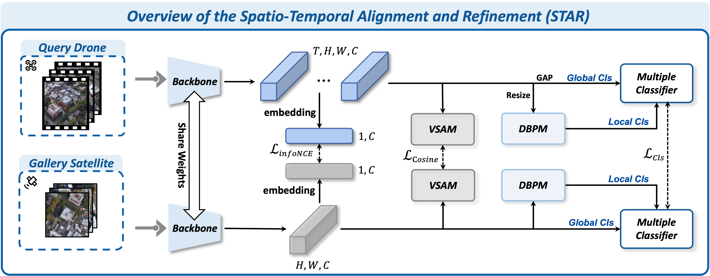
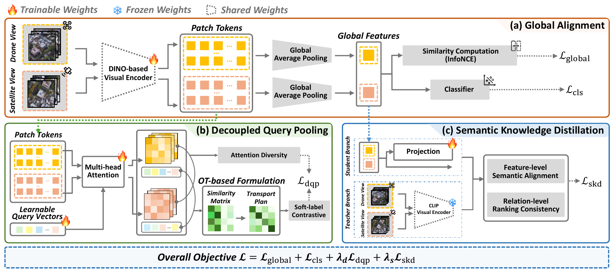
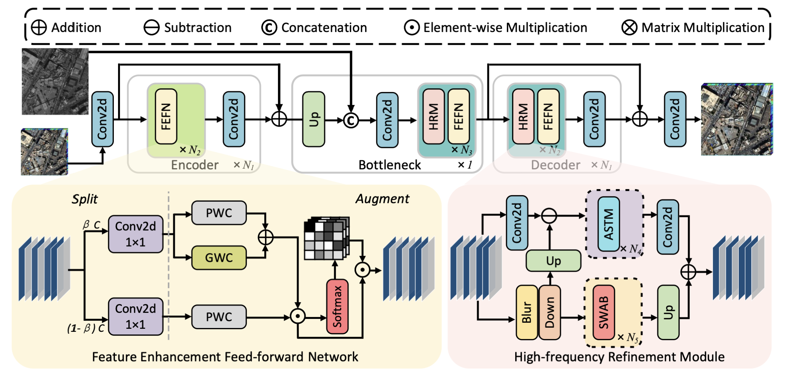
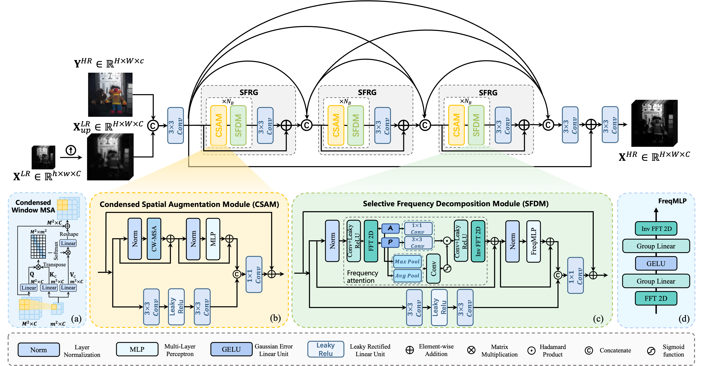
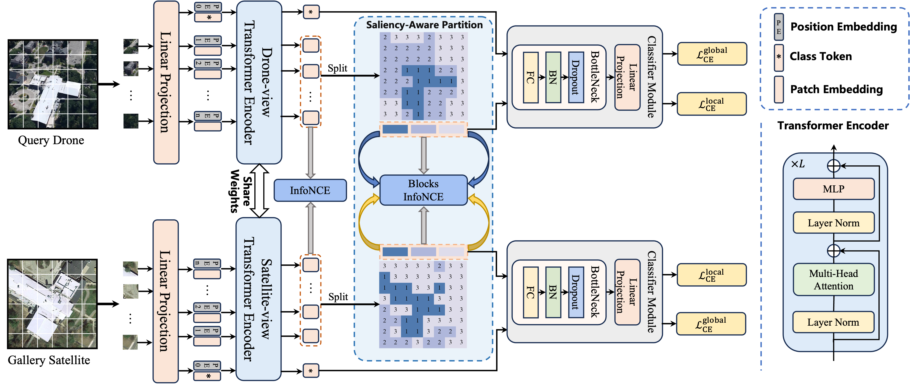
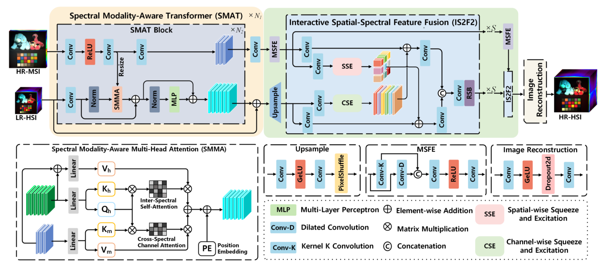
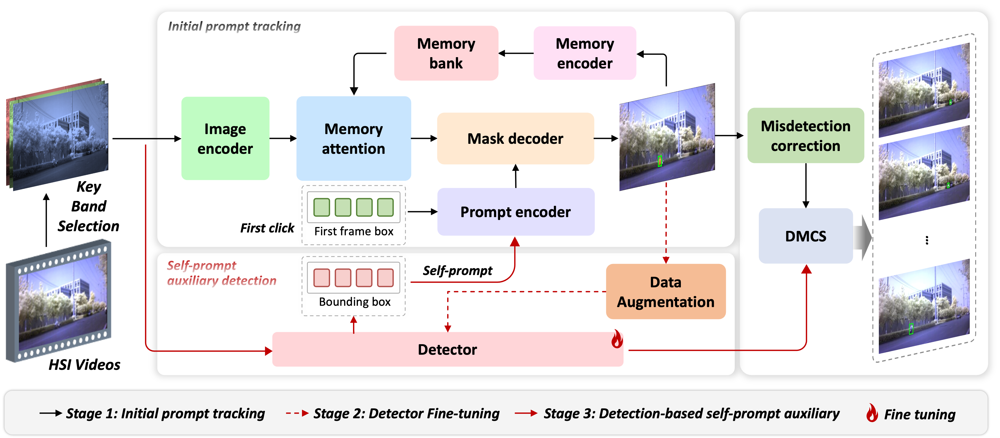
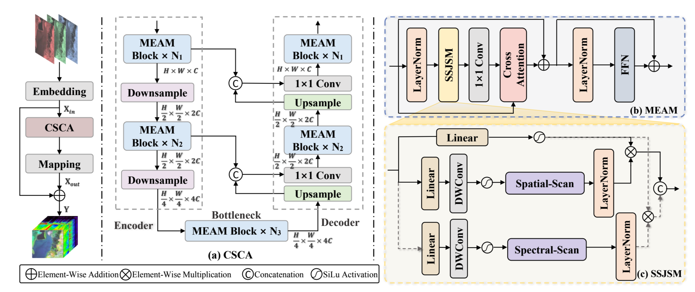

Embodied AI & Egocentric Vision
Perception and reasoning for agents that see and act in the physical world from a first-person view.
HKUST-GZ · DSA Thrust
莫子谦
Exploring Embodied AI and Spatial Intelligence
Updated … · Google Scholar
Greetings! I’m currently a PhD student in the Data Science and Analytics (DSA) Thrust at the Hong Kong University of Science and Technology (Guangzhou) (HKUST-GZ), supervised by Asst. Prof. Jiaheng Wei (魏嘉珩). I received my master’s degree in Artificial Intelligence from Shenzhen University, where I was supervised by Assoc. Prof. Meng Xu (徐萌) and conducted research at the Hyperspectral Image Laboratory (HSI Lab). My research interests include computer vision, embodied AI, vision-language models, and spatial intelligence.
Three directions that shape how agents see and locate themselves in the world.
Perception and reasoning for agents that see and act in the physical world from a first-person view.
Vision-language models and multimodal systems that understand space, geometry, and scene structure.
Matching and aligning imagery across viewpoints — ground, aerial, and satellite — for robust localization.
Recent acceptances, talks, and competition results.
STAR, our work on spatio-temporal alignment and refinement for cross-view geo-localization, was accepted by IEEE TGRS.
S3Geo was accepted by ACM MM 2026. It explores structure-semantic synergy for cross-view geo-localization.
ASTMNet, our work on adaptive spectral token mixing for pansharpening, was accepted by ICASSP 2026.
ESFS, our work on spatial-frequency synergy for multispectral and hyperspectral image fusion, was accepted by IEEE TGRS.
SIGN was accepted for an oral presentation at IGARSS 2025, featuring saliency-aware global-local learning for cross-view geo-localization.
Our team won 1st place in the Hyperspectral Object Tracking Challenge at the IEEE GRSS WHISPERS 2024 Competition.
Selected papers across geo-localization, spectral imaging, and multimodal vision.








National Scholarship for Graduate Students Top 2%
First Prize in the Scholarship of Shenzhen University Top 20%
First Prize in the Scholarship of Shenzhen University Top 20%
Second Prize in the Scholarship of Hubei University of Technology Top 6%
Third Prize in the Scholarship of Hubei University of Technology Top 30%
Second Prize in the Scholarship of Hubei University of Technology Top 6%
Director, Power Low-Altitude Ecosystem Subcommittee, IEEE PES China Satellite Technical Committee on Power System Communications and Cybersecurity.
PhD student in Data Science and Analytics (DSA), The Hong Kong University of Science and Technology (Guangzhou), Guangzhou, China.
Master of Science in Artificial Intelligence, Shenzhen University, Shenzhen, China.
Bachelor of Science in Computer Science and Technology, Hubei University of Technology, Wuhan, China.
Research Assistant, HKUST-GZ, China.
Open to research discussions on embodied AI, spatial intelligence, and cross-view geo-localization.